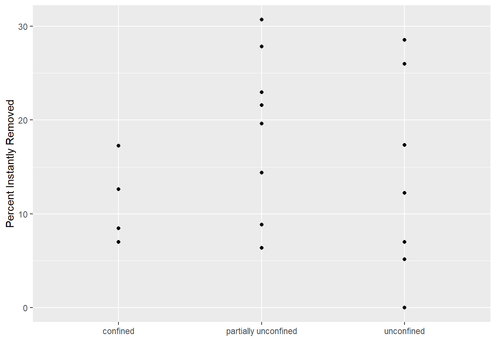
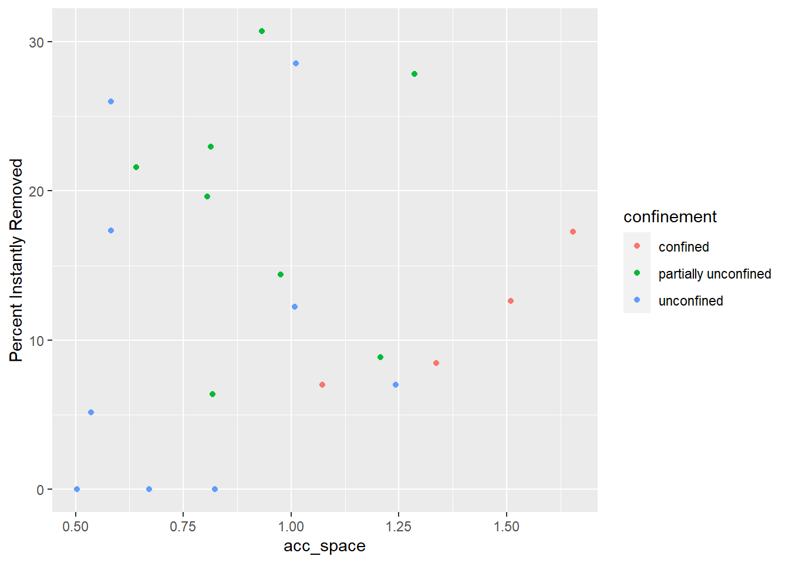
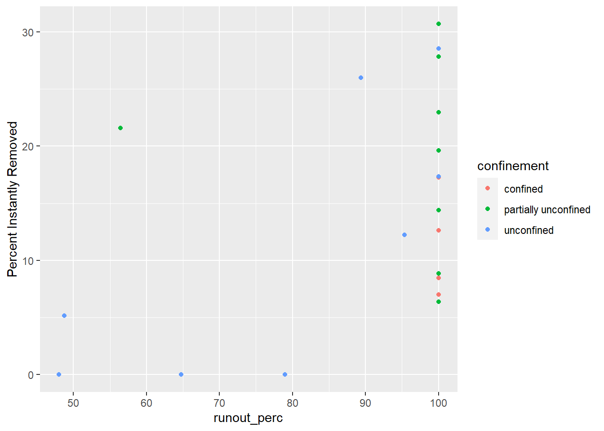
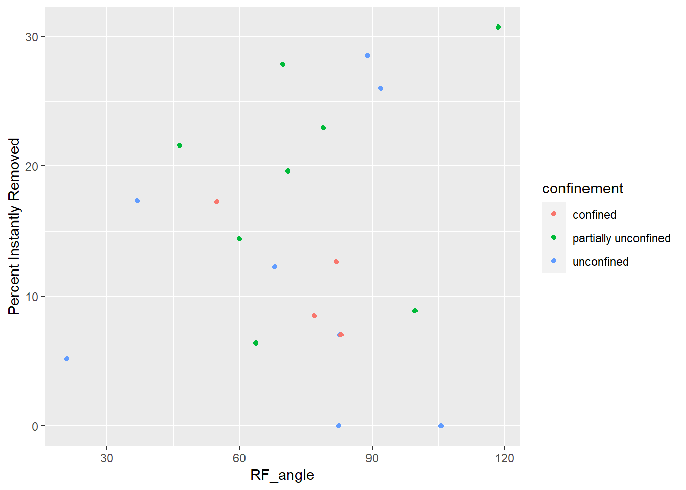
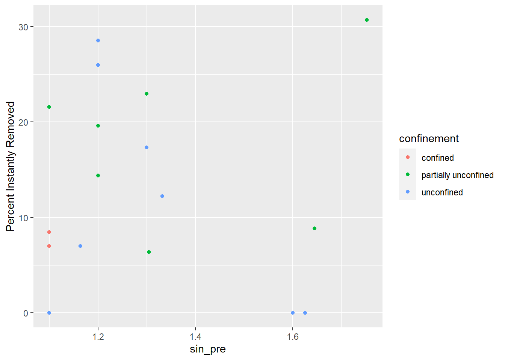
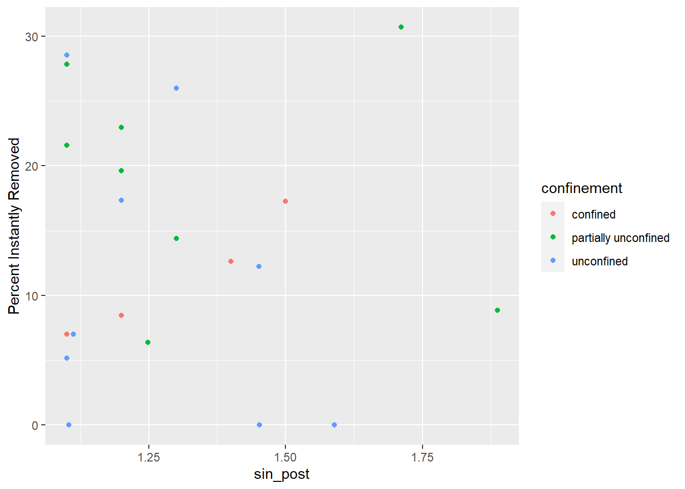
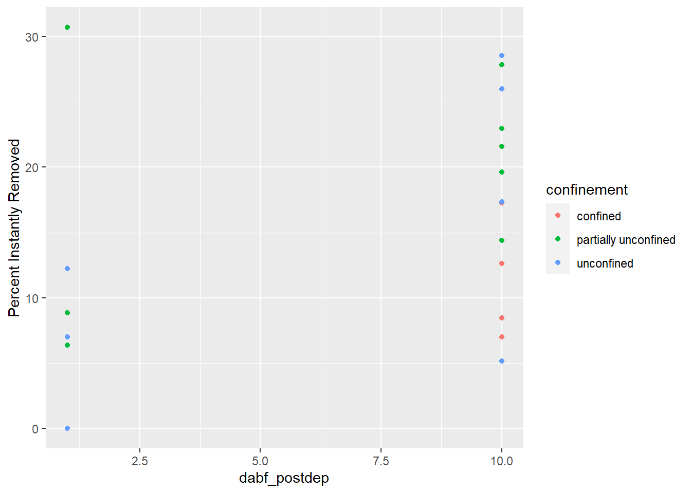

These are some very preliminary scatter plots for potential predictor and response variables. I still have data to gather :).
Confinement Plot  Accomodation Space  Runout Percent of Valley Bottom  Angle Plot  Sinuosity Pre-fire  Sinuosity Post-fire  Days above Bankfull 